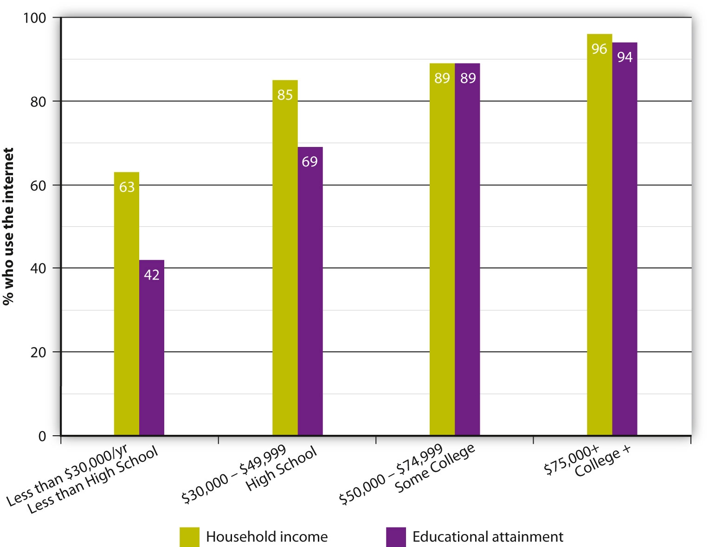
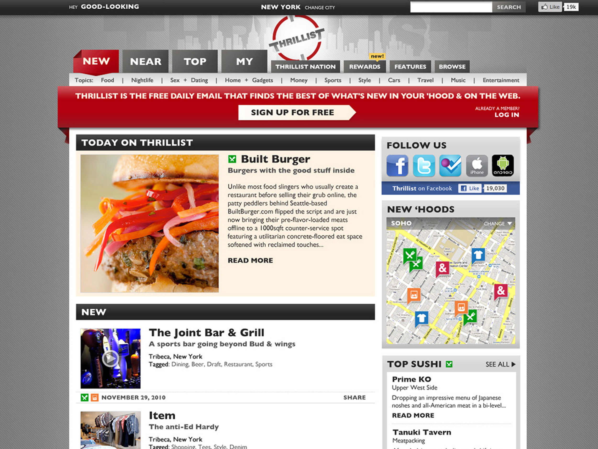

Does the tablet computer represent the future of media? Tech-savvy consumers certainly seem to think so—on the day Apple’s much-hyped iPad hit the market in April 2010, the company sold more than 300,000 devices. Described as “Goldilocks” gadgets—not too big, not too small—tablet computers are creating what former Apple CEO Steve Jobs calls a “third segment” of computing between handheld phones and laptop computers.Bobbie Johnson and Charles Arthur, “Apple iPad: The Wait Is Over—But Is It the Future of Technology or Oversized Phone?” Guardian (London), January 27, 2010, http://www.guardian.co.uk/technology/2010/jan/27/apple-ipad-tablet-computer-kindle. The iPad, which sports a 9.7-inch color LED touch screen, enables consumers to surf the web, play games, email, and use many of the same applications available on the company’s vastly popular smartphone, the iPhone. Its primary function upon release however, was to corner the e-book market, putting it in competition with Amazon.com’s black-and-white Kindle e-reader. Signing deals with five major publishers—HarperCollins, Penguin, Simon & Schuster, Macmillan, and Hachette—Apple created a program called iBooks that enables customers to download e-books directly onto the iPad via the digital media application iTunes. The print media industry—which was unable to capitalize on the benefits of new media during the Internet age of free print and video content on the web, and saw its profits disintegrate as a result—is hopeful that tablet computers such as the iPad will provide some form of digital salvation. John Makinson, chairman of the Penguin Group, said the iPad would help “attract millions of new readers to the world’s best books.”Bobbie Johnson and Charles Arthur, “Apple iPad: The Wait Is Over—But Is It the Future of Technology or Oversized Phone?” Guardian (London), January 27, 2010, http://www.guardian.co.uk/technology/2010/jan/27/apple-ipad-tablet-computer-kindle. More importantly for the future of traditional media, the iPad may provide a way for publishers to generate a profit from these new readers. Electronic publishers who sell their products through iBooks receive a 70 percent share of any revenues, and are able to set their prices higher than Amazon’s, a relief for publishers worried that e-books might undercut their sales.
The success of Apple’s iPhone, which is expected to generate an estimated $1.4 billion in 2010 from its App Store alone, may provide some indication of how well the iPad is likely to perform in the near future. Trip Hawkins, a founder of interactive entertainment software company Electronic Arts, commented, “The iPhone was a harbinger. When you have a device that is this convenient and fun for consumers to use, you can get a lot more people interested in paying for and engaging with the content. Big media companies should be all over this like a cheap suit.”Brad Stone and Stephanie Clifford, “With Apple Tablet, Print Media Hope for a Payday,” New York Times, January 25, 2010, http://www.nytimes.com/2010/01/26/technology/26apple.html. And they are. Several major newspapers and magazine companies have signed up with Apple’s latest device, and their content is available via iPad applications. Some, such as The New York Times and USA Today, are initially offering their apps for free with a paid app coming down the line, while others, such as The Wall Street Journal and Time, are available for a download fee. Thomas J. Wallace, editorial director of Condé Nast, said, “2010 is going to be the year of the tablet, and we feel we are in a very good position for it.”Brad Stone and Stephanie Clifford, “With Apple Tablet, Print Media Hope for a Payday,” New York Times, January 25, 2010, http://www.nytimes.com/2010/01/26/technology/26apple.html. The publishing company launched its first app for GQ, a men’s magazine, at a cost of $2.99 in April 2010. To avoid losing paying customers, media companies are adjusting part of their digital strategy so that consumers are no longer able to access the same content for free on the web.
Despite initial concerns that the iPad might prove to be an unnecessary gadget, performing functions that can be performed on other devices, its sales have so far surpassed all expectations. As of 2010, the original iPad sales had topped more than 15,000,000 units in the first 9 months, outpacing sales of Mac laptops. The cheaper price and variety of functions made it a hit with consumers. With magazine and newspaper publishers able to provide a more interactive experience on the iPad through video, graphics, and creative design layouts, analysts are predicting the iPad will revolutionize the publishing industry the way the iPod and the iPhone shook up the digital music and smartphone industries, respectively. Whether the iPad will remain at the forefront of the digital revolution in the years to come remains to be seen, but it has the potential to eventually become an all-in-one television, newspaper, and bookshelf.
Life has changed dramatically over the past century, and a major reason for this is the progression of media technology. Compare a day in the life of a modern student—let’s call her Katie—with a day in the life of someone from Katie’s great-grandparents’ generation. When Katie wakes up, she immediately checks her smartphone for text messages and finds out that her friend will not be able to give her a ride to class. Katie flips on the television while she eats breakfast to check the news and learns it is supposed to rain that day. Before she leaves her apartment, Katie goes online to make sure she remembered the train times correctly. She grabs an umbrella and heads to the train station, listening to a music application on her smartphone on the way. After a busy day of classes, Katie heads home, occupying herself on the train ride by watching YouTube clips on her phone. That evening, she finishes her homework, emails the file to her instructor, and settles down to watch the television show she digitally recorded the night before. While watching the show, Katie logs on to Facebook and chats with a few of her friends online to make plans for the weekend and then reads a book on her e-reader.
Katie’s life today is vastly different from the life she would have led just a few generations ago. At the beginning of the 20th century, neither television nor the Internet existed. There were no commercial radio stations, no roadside billboards, no feature films, and certainly no smartphones. People were dependent on newspapers and magazines for their knowledge of the outside world. An early-20th-century woman the same age as Katie—let’s call her Elizabeth—wakes up to read the daily paper. Yellow journalism is rife, and the papers are full of lurid stories and sensational headlines about government corruption and the unfair treatment of factory workers. Full-color printing became available in the 1890s, and Elizabeth enjoys reading the Sunday comics. She also subscribes to Good Housekeeping magazine. Occasionally, Elizabeth and her husband enjoy visiting the local nickelodeon theater, where they watch short silent films accompanied by accordion music. They cannot afford to purchase a phonograph, but Elizabeth and her family often gather around a piano in the evening to sing songs to popular sheet music. Before she goes to sleep, Elizabeth reads a few pages of The Strange Case of Dr. Jekyll and Mr. Hyde. Separated by nearly a century of technology, Elizabeth’s and Katie’s lives are vastly different.
Traditional mediaMedia that encompass all the means of communication that existed before the introduction of the Internet and new media technology, including printed materials (books, magazines, and newspapers), broadcast communications (television and radio), film, and music. encompasses all the means of communication that existed before the Internet and new media technology, including printed materials (books, magazines, and newspapers), broadcast communications (television and radio), film, and music. New mediaMedia that encompass all the forms of communication in the digital world, including electronic video games and the Internet., on the other hand, includes electronic video games and entertainment, and the Internet and social media. Although different forms of mass media rise and fall in popularity, it is worth noting that despite significant cultural and technological changes, none of the media discussed throughout this text has fallen out of use completely.
First popularized in the 1970s with Atari’s simple table-tennis simulator Pong, video games have come a long way over the past four decades. Early home game consoles could play only one game, a limitation solved by the development of interchangeable game cartridges. The rise of the personal computer in the 1980s enabled developers to create games with more complex story lines and to allow players to interact with each other via the computer. In the mid-1980s, online role-playing games developed, allowing multiple users to play at the same time. A dramatic increase in Internet use helped to popularize online games during the 1990s and 2000s, both on personal computers and via Internet-enabled home console systems such as the Microsoft Xbox and the Sony PlayStation. The Internet has added a social aspect to video gaming that has bridged the generation gap and opened up a whole new audience for video game companies. Senior citizens commonly gather in retirement communities to play Nintendo’s Wii bowling and tennis games using a motion-sensitive controller, while young professionals and college students get together to play in virtual bands on games such as Guitar Hero and Rock Band. No longer associated with an isolated subculture, contemporary video games are bringing friends and families together via increasingly advanced gaming technology.
It is almost impossible to overstate the influence the Internet has had on media over the past two decades. Initially conceived as an attack-proof military network in the 1960s, the Internet has since become an integral part of daily life. With the development of the World Wide Web in the 1980s and the introduction of commercial browsers in the 1990s, users gained the ability to transmit pictures, sound, and video over the Internet. Companies quickly began to capitalize on the new technology, launching web browsers, offering free web-based email accounts, and providing web directories and search engines. Internet usage grew rapidly, from 50 percent of American adults in 2000 to 75 percent of American adults in 2008.Pew Research Center, Internet User Profiles Reloaded, January 5, 2010, http://pewresearch.org/pubs/1454/demographic-profiles-internet-broadband-cell-phone-wireless-users. Now that most of the industrialized world is online, the way we receive our news, do business, conduct research, contact friends and relatives, apply for jobs, and even watch television has changed completely. To provide just one example, many jobs can now be performed entirely from home without the need to travel to a central office. Meetings can be conducted via videoconference, written communication can take place via email, and employees can access company data via a server or file transfer protocol (FTP) site. You very likely have had the opportunity to take an online college class.
In addition to increasing the speed with which we can access information and the volume of information at our fingertips, the Internet has added a whole new democratic dimension to communication. Becoming the author of a printed book may take many years of frustrated effort, but becoming a publisher of online material requires little more than the click of a button. Thanks to social media such as blogs, social networking sites, wikis, and video-sharing websites, anyone can contribute ideas on the web. Social media has many advantages, including the instantaneous distribution of news, a variety of different perspectives on a single event, and the ability to communicate with people all over the globe. Although some industry analysts have long predicted that the Internet will render print media obsolete, mass-media executives believe newspapers will evolve with the times. Just as the radio industry had to rethink its commercial strategy during the rise of television, newspaper professionals will need to rethink their methods of content delivery during the age of the Internet.
New technologies have developed so quickly that executives in traditional media companies often cannot retain control over their content. For example, as we saw, when music-sharing website Napster began enabling users to exchange free music files over the Internet, peer-to-peer file sharing cost the music industry a fortune in lost CD sales. Rather than capitalize on the new technology, music industry executives sued Napster, ultimately shutting it down, but never quite managing to stamp out online music piracy. Even with legal digital music sales through online vendors such as Apple’s iTunes Store, the music industry is still trying to determine how to make a large enough profit to stay in business.
The publishing industry has also suffered from the effects of new technology (although newspaper readership has been in decline since the introduction of television and radio). When newspapers began developing online versions in response to competition from cable television, they found themselves up against a new form of journalism: amateur blogging. Initially dismissed as unreliable and biased, blogs such as Daily Kos and The Huffington Post have gained credibility and large readerships over the past decade, forcing traditional journalists to blog and tweet in order to keep pace (which allows less time to check that sources are reliable or add in-depth analysis to a story). Traditional newspapers are also losing out to news aggregators such as Google News, which profit from providing links to journalists’ stories at major newspapers without offering financial compensation to either the journalists or the news organizations. Many newspapers have adapted to the Internet out of necessity, fighting falling circulation figures and slumping advertising sales by offering websites, blogs, and podcasts and producing news stories in video form. Those that had the foresight to adapt to the new technology are breathing a sigh of relief; a 2010 Pew Research Center report found that more Americans receive their news via the Internet than from newspapers or radio sources, and that the Internet is the third most popular news source behind national and local television news (see Section 6.3 "Current Popular Trends in the Music Industry").Pew Research Center, “The New News Landscape: Rise of the Internet,” March 1, 2010, http://pewresearch.org/pubs/1508/internet-cell-phone-users-news-social-experience?src=prc-latest&proj=peoplepress.
Critics of the pay-for-content model point to the failure of Newsday, a Long Island, New York, daily that was one of the first non-business publications to use the pay-for-content model. In October 2009, Newsday began charging readers $5 a week ($260 a year) for unlimited access to its online content. Three months later, an analysis of the move indicated that it had been a total failure. Just 35 people had signed up to pay for access to the site. Having spent $4 million redesigning and relaunching the Newsday website in preparation for the new model, the owners grossed just $9,000 from their initial readership.
However, the lack of paying consumers may be partly accounted for by the number of exceptions granted by the company. Subscribers to the print version of the paper can access the site for free, as can those with Optimum Cable. According to Newsday representatives, 75 percent of Long Island residents have either a newspaper subscription or Optimum Cable. “Given the number of households in our market that have access to Newsday’s website as a result of other subscriptions, it is no surprise that a relatively modest number have chosen the pay option,” said a Cablevision spokeswoman.John Koblin, “After 3 Months, Only 35 Subscriptions for Newsday’s Web Site,” New York Observer, January 26, 2010, http://www.observer.com/2010/media/after-three-months-only-35-subscriptions-newsdays-web-site. Even though most Long Island residents have access to the site, traffic has dropped considerably. A Nielsen Online survey revealed that traffic fell from 2.2 million visits in October 2009 to 1.5 million visits in December 2009. Publishing executives will be watching closely to see whether The New York Times meets a similar fate with its pay-for-content model.
New media have three major advantages over traditional media. First, it is immediate, enabling consumers to find out the latest news, weather report, or stock prices at the touch of a button. Digital music can be downloaded instantly, movies can be ordered via cable or satellite on-demand services, and books can be read on e-readers. In an increasingly fast-paced world, there is little need to wait for anything. The second advantage is cost. Most online content is free, from blogs and social networking sites to news and entertainment sources. Whether readers are willing to pay for content once they are used to receiving it for free is something that the The New York Times set to find out in 2011, when it introduces a metered fee model for its online paper. Finally, new media is able to reach the most remote parts of the globe. For example, if a student is looking for information about day-to-day life in Iran, there is a high probability that a personal web page about living in that country exists somewhere on the Internet. Around three-fourths of Americans, half of Europeans, and just over one-fourth of the world’s population overall have Internet access.Internet World Stats, “Internet Usage Statistics,” http://www.internetworldstats.com/stats.htm. This widespread reach makes the Internet an ideal target for advertisers, who can communicate with their desired niche audiences via tracking devices such as profile information on social networking sites.
Review the traditional and emerging forms of media. Then answer the following short-answer questions. Each response should be a minimum of one paragraph.
Figure 16.1

Michael Jackson’s death at age 50 caused a frenzy of media attention. Here, fans and the media have gathered at Jackson’s mansion hoping to catch a glimpse of Jackson’s family.
As we saw in Chapter 14 "Ethics of Mass Media", when superstar Michael Jackson died of a cardiac arrest in June 2009, the news sent media outlets all over the world into a frenzy, providing journalists, bloggers, authors, and television news anchors with months of material. The pop singer’s death is a good example of how information is disseminated through the various media channels. Unafraid to publish unconfirmed rumors that may have to be retracted later, blogs and gossip websites are often first to produce celebrity news stories. Digital sources also have the advantage of immediacy—rather than waiting for a physical newspaper to be printed and delivered, a time-consuming process that occurs just once a day, bloggers and online reporters can publish a story on the Internet in the time it takes to type it out. Within 40 minutes after the Los Angeles Fire Department arrived at Jackson’s home, a small entertainment website called X17online posted the news that Jackson had suffered cardiac arrest. Twenty minutes later, larger entertainment site TMZ picked up the information and distributed it to hundreds of thousands of people via RSSA content delivery vehicle used to syndicate news and other web content, enabling consumers to automatically receive new digital content from a provider.—a web publishing technology that enables users to automatically receive new digital content from the provider. Multiple Wikipedia members updated Jackson’s biographical entry to include the news of his cardiac arrest before any major news networks or broadcasters had announced the news. By the time the cardiac arrest was reported on CNN’s official Twitter account two hours after the 911 call, Twitter users and TMZ reporters were already posting reports of the star’s death. The story created such a surge in online traffic that microblogging site Twitter temporarily shut down and Google returned an error message for searches of the singer’s name because it assumed it was under attack. An hour after the news of Jackson’s death hit the Internet, mainstream news sources such as The Los Angeles Times, MSNBC, and CNN confirmed the information, and it was immediately disseminated among local and national television and radio stations.
The order in which the news broke among the major media outlets was a source of contention. Many outlets around the world were reluctant to rely on the TMZ report, because the website was primarily known for its frivolous content, aggressive paparazzi tactics, and embarrassing celebrity photographs. Many of the more reputable news sources, including CNN, waited until both the coroner’s office and The Los Angeles Times had confirmed Jackson’s death before announcing it as a fact to viewers, preferring to release an accurate story rather than to gain an edge over other news outlets (even though both TMZ and CNN are owned by Time Warner). “Given the nature of the story we exercised caution,” said CNN spokesman Nigel Pritchard.Scott Collins and Greg Braxton, “TV Misses Out as Gossip Website TMZ Reports Michael Jackson’s Death First,” Los Angeles Times, June 26, 2009, http://articles.latimes.com/2009/jun/26/local/me-jackson-media26. However, Harvey Levin, managing editor of TMZ, denied that his site was less credible than any other news source. “TMZ is a news operation and we are fact based,” he said. “Our goal is always to take stories and factually source them and present them. We’re not a gossip site…. We have things researched, we have things lawyered, we make lots of phone calls…. I mean it’s the same principle.”Neal Karlinsky and Eloise Harper, “Michael Jackson’s Death Puts Us Weekly and TMZ at the Head of the Pack,” ABC News, July 1, 2009, http://abcnews.go.com/Nightline/MichaelJackson/story?id=7971440&page=1. Despite Levin’s protests, it appears that, for now at least, old media stalwarts such as the Associated Press and The LA Times have the advantage of reliability over (sometimes) faster sources with less credibility. As Adam Fendelman, founder of entertainment news site HollywoodChicago.com, noted, “The Web and TV phenomenon that TMZ is is very good at fast-breaking and late-breaking news, but there’s an inherent problem with trust in the everyday consumer’s mind”Wailin Wong, “Michael Jackson Death News: Online Activity Heats Up Twitter and Google, Slows Down Some Sites,” Chicago Tribune, June 26, 2009, http://www.chicagotribune.com/topic/wghp-story-jackson-media-coverage-090625,0,4191041.story. (see Section 6.4 "Influence of New Technology" for more advantages and disadvantages of new media).
Once news of Michael Jackson’s death had been reported through all the major international media outlets, a tabloid war broke out, with newspapers and magazines determined to get the “story behind the story.” Speculation about the cause of death and the role played by prescription drugs fed salacious media reports in the tabloids and news and gossip magazines long after the initial news story broke. Other newspapers and magazines, including Time and Entertainment Weekly, focused on tribute articles that reviewed Jackson’s long list of accomplishments and reflected on his musical legacy, and the four major broadcast networks (ABC, NBC, Fox, and CBS) aired documentaries covering the pop star’s life. In the days and weeks following Jackson’s death, radio stations abandoned their playlists in favor of back-to-back Michael Jackson hits, contributing to a huge upswing in record sales. Media coverage continued for many months, saturating newspapers, magazines, and television and radio stations—when the coroner’s report ruled Jackson’s death a homicide in August 2009, during the funeral service a month later, and again in February 2010 when Jackson’s doctor was charged with involuntary manslaughter for administering a powerful sedative to help the star sleep.
Although the book-publishing industry was at a disadvantage because of the time delay between receiving news of Jackson’s death and the ability to physically place books on shelves, many authors, agents, and publishers were able to capitalize on the star’s tragic story. Numerous biographies were published in the months following Jackson’s death, along with several explosive “tell-all” books by people close to the star that provided intimate details about his private life. To compensate for their lack of immediacy, books have several advantages over other print and web sources, primarily the ability to include greater depth of information on a subject than any other form of media. Fans eager for more information about their idol and his life eagerly purchased Jackson biographies, including his 1988 autobiography Moonwalk, which was re-released in October 2009.
Other, less immediate forms of media were also commercially successful, including a posthumous film titled This Is It, named after the much-anticipated comeback tour that was supposed to start just 3 weeks after Jackson’s death. Composed of rehearsal footage from the concerts, the documentary was shown on more than 3,400 domestic screens during a sold-out 2-week run in October and November 2009. An accompanying two-disc soundtrack album, featuring classic Jackson hits along with new track “This Is It,” topped the Billboard 200 chart upon its release in November 2009, selling 373,000 copies in its first week of release. A spin-off DVD also topped the U.S. sales chart in February 2010, selling more than 1.2 million copies the week of its release. Posthumous sales of Jackson’s earlier material also generated huge amounts of revenue. In the first 4 months after Jackson’s death, Forbes magazine estimated that his estate made $90 million in gross earnings. Music industry consultant Barry Massarsky commented, “Nothing increases the value of an artist’s catalog [more] than death … an untimely death.”Lauren Streib, “Michael Jackson’s Money Machine,” Forbes, October 27, 2009, http://www.forbes.com/2009/10/27/michael-jackson-earnings-since-death-dead-celebs-09-business-entertainment-jackson.html. This cross-media approach is typical of every major news story, although the controversy surrounding Jackson throughout his life, the circumstances of his death, and the sheer magnitude of his contribution to pop history meant that the performer’s demise had a particularly widespread effect.
As the Michael Jackson example shows, the number of people receiving news from the Internet is rapidly growing, although television remains the dominant source of information. Currently, most Americans use multiple resources for news. In a 2010 survey, 92 percent of people said they obtained their daily news from a variety of sources, including online news sites, blogs, social networking sites such as Twitter and Facebook, television, newspapers, and radio.Suzanne Choney, “Internet, TV Main News Sources for Americans,” MSNBC, March 1, 2010, http://www.msnbc.msn.com/id/35607411/ns/technology_and_science-tech_and_gadgets/. On a typical day, 6 in 10 American adults get their news online, placing the Internet third behind local television news and national or cable television news.Suzanne Choney, “Internet, TV Main News Sources for Americans,” MSNBC, March 1, 2010, http://www.msnbc.msn.com/id/35607411/ns/technology_and_science-tech_and_gadgets/. The use of smartphone technology is contributing to the ease with which people can access online news; more than a third of cell phone owners use their phones to check for weather, news, sports, and traffic information.Suzanne Choney, “Internet, TV Main News Sources for Americans,” MSNBC, March 1, 2010, http://www.msnbc.msn.com/id/35607411/ns/technology_and_science-tech_and_gadgets/.
For young people in particular, the rise in social networking use is transforming the news from a one-way passage of information into a social experience. People log on to their Facebook or Twitter accounts, post news stories to their friends’ web pages, comment on stories that interest them, and react to stories they have recently read. During a survey of students at the University of Texas at Austin, senior Meg Scholz told researchers that she scanned news websites and blogs every time she went online to check her email, eliminating the need to pick up a newspaper or watch television news. “It’s not that I have anything against a printed newspaper,” she said. “But for my lifestyle the Internet is more accessible.”Peter Johnson, “Young People Turn to the Web for News,” Media Mix, USA Today, March 22, 2006, http://www.usatoday.com/life/columnist/mediamix/2006-03-22-media-mix_x.htm. Other Internet users appreciate the ability to filter news and information that is relevant to them; 28 percent of those surveyed said they customize their social networking home pages to include news from sources or on topics that interest them.Suzanne Choney, “Internet, TV Main News Sources for Americans,” MSNBC, March 1, 2010, http://www.msnbc.msn.com/id/35607411/ns/technology_and_science-tech_and_gadgets/. Researchers at the Pew Research Center’s Internet & American Life Project, the organization that conducted the survey, speculate that this personalization of news is a result of the constant stream of information in modern life. Pew Research Center Director Lee Rainie commented, “People feel more and more pressed about the volume of information flowing into their lives. So, they customize the information flow in order to manage their lives well and in order to get the material that they feel is most relevant to them.”Suzanne Choney, “Internet, TV Main News Sources for Americans,” MSNBC, March 1, 2010, http://www.msnbc.msn.com/id/35607411/ns/technology_and_science-tech_and_gadgets/. Although television remains the primary source of news for most Americans, Internet and mobile technology is changing the structure of information delivery methods to audiences, making it more portable, more personalized, and more participatory.
Conduct a survey among your friends, family, and classmates to find out where they get their news on a regular basis. Then respond to the following short-answer questions. Each response should be a minimum of one paragraph.
In October 2009, 17-year-old child-care student Ashleigh Hall made friends with a handsome 19-year-old man on Facebook. Ashleigh, from Darlington, England, and her new friend began chatting online and exchanged mobile phone numbers so they could text each other. The excited teenager soon told her friends that she was going on a date with her new boyfriend, Pete, and that his father would be picking her up in his car. Unfortunately, Pete and his “father” were one and the same person—convicted rapist Peter Chapman. The 33-year-old homeless sex offender used his Facebook alter ego (which included photographs of an unknown teenage boy) to lure Ashleigh to a secluded location, where he raped and murdered her. Chapman was arrested by chance shortly after the event, and in court he pleaded guilty to kidnap, rape, and murder.
Ashleigh’s tragic story illustrates some disadvantages of modern media delivery: anonymity and unreliability. Although social networking sites such as Facebook are a convenient way to create new relationships and reconnect with old friends, there is no way of knowing whether users are who they claim to be, leaving people (particularly impressionable youths) vulnerable to online predators. Since much of the content on the Internet is unregulated, this lack of reliability spans the entire online spectrum, from news stories and Wikipedia articles to false advertising claims and unscrupulous con artists on websites such as Craigslist.
However, modern media can also work to mobilize efforts to stop crime. The popular NBC television series Dateline: To Catch a Predator followed police investigators who used Internet chat rooms to identify potential child molestors. Posing as young teens, police officers entered chat rooms and participated in conversations with various users. If an adult user began a sexual dialogue and expressed interest in meeting the teen for sexual purposes, the police set up a sting operation, catching the would-be pedophile in the act. In cases such as these, the rapid transmission of information and the global nature of the Internet made it possible for criminals to be apprehended.
If Ashleigh’s story highlights some of the most negative aspects of modern media, the quick dissemination of news and information are some of the most beneficial aspects of the World Wide Web. As we noted earlier in the chapter, speed can be a huge advantage of online media delivery. When a news story breaks, it can be delivered almost instantaneously through RSS feeds and via many major outlets, enabling people all over the world to learn about a breaking news story mere minutes after it happens.
Once an Internet user has paid for a monthly service provider, most of the content on the web is free, allowing people access to an unlimited wealth of information via news websites, search engines, directories, and home pages for numerous topics ranging from cooking tips to sports trivia. When all this information became readily available at the touch of a button, many journalists and technology experts wrote articles claiming the information overload was bad for people’s health. Fears that the new technology would cause attention deficit disorder, stunt people’s reasoning, and damage their ability to empathize were raised by some highly respected publications, including The Times of London and the The New York Times. However, there is no consistent evidence that the Internet causes psychological problems; in fact, statistics show that people who use social networking sites have better offline social lives, and people who play computer games are better at absorbing and reacting to information than those who do not, and they experience no loss of accuracy or increased impulsiveness.Vaughan Bell, “Don’t Touch That Dial!” Slate, February 15, 2010, http://www.slate.com/id/2244198/pagenum/all/. As Vaughan Bell points out in his article about the history of media scares, “Worries about information overload are as old as information itself, with each generation reimagining the dangerous impacts of technology on mind and brain.”Vaughan Bell, “Don’t Touch That Dial!” Slate, February 15, 2010, http://www.slate.com/id/2244198/pagenum/all/.
In addition to speed, reach, and cost, online media delivery enables a wider range of voices and perspectives on any subject. Through nontraditional media such as blogs and Twitter, people can put their own personal slant on current events, popular culture, and issues that are important to them without feeling obliged to remain neutral. A study by the Pew Research Center found that nontraditional media sources report on a wider variety of stories than traditional media, enabling individual sites to develop their own personality and voice. The study also discovered that these online sources focus on highly emotional subject matter that can be personalized by the writers and shared in the social forum.Pew Research Center, “New Media, Old Media,” May 23, 2010, http://pewresearch.org/pubs/1602/new-media-review-differences-from-traditional-press. By opening up blogs and social media sites to online discussion or debate, bloggers enable readers to generate their own content, turning audiences from passive consumers into active creators. In this way, knowledge becomes a social process rather than a one-way street—the blogger posts an opinion, a reader comments on the blogger’s opinion, the blogger then evaluates the reader’s comment and revises his or her perspective accordingly, and the process repeats itself until an issue has been thoroughly explored. Many bloggers also provide links to other blogs they support or enjoy reading, enabling ideas with merit to filter through various channels on the Internet.
Along with a growing number of online predators misrepresenting themselves on social networking sites, the Internet is responsible for a lot of other types of misinformation circulating the web. Unless users are able to distinguish between reliable, unbiased sources and factual information, they may find themselves consuming inaccurate news reports or false encyclopedia entries. Even so-called reliable news sources are subject to occasional errors with their source material. When French composer Maurice Jarre died in 2009 at the age of 84, Irish sociology and economics student Shane Fitzgerald decided to try an experiment with WikipediaCollaborative, web-based encyclopedia that is freely edited by registered users.. He added fictional quotes to Jarre’s Wikipedia entry and then watched as newspapers worldwide (including reputable sources such as the The Guardian) copied his quotes word for word and attributed them to the composer. Red-faced journalists were later forced to correct their errors by retracting the quotes. Writing a follow-up report for The Irish Times, Fitzgerald commented, “If I could so easily falsify the news across the globe, even to this small extent, then it is unnerving to think about what other false information may be reported in the press.”J. Mark Lytle, “Wikipedia Hoax Shames Major Publishers,” TechRadar, May 10, 2009, http://www.techradar.com/news/internet/web/wikipedia-hoax-shames-major-publishers-597729.
Although most traditional media strive for nonpartisanship, many newer online sources are fervently right wing or left wing. With websites such as the Huffington Post on the left of the political spectrum and the Drudge Report on the right, consumers need to be aware when they are reading news with an ideological slant. Critics fear the trend toward social media sources may lead to the restriction of the movement of ideas. If consumers choose their media circle exclusively consistent with their own political biases, they will be limited to a narrow political viewpoint.
Along with practical disadvantages, the Internet also has several economic disadvantages. An increasing gap between people who can afford personal computers and access to the web and people who cannot, known as the digital divide, separates the haves and the have-nots. Although about 75 percent of U.S. households are connected to the Internet, there are gaps in access in terms of age, income, and education. For example, a recent study found that 93 percent of people age 18–29 have Internet access, compared with 70 percent of people 50–64 and just 38 percent of people over 65.Pew Research Center, “Demographics of Internet Users,” Pew Internet & American Life Project, January 6, 2010, http://www.pewinternet.org/Static-Pages/Trend-Data/Whos-Online.aspx. Similar disparities occur with income and education (see Figure 16.2).
These disparities mean that people with lower incomes and educational levels are at a disadvantage when it comes to accessing online job listings, information, news, and computer-related skills that might help them in the workplace. The digital divide is even more prominent between developed and developing countries. In nations such as Jordan, Saudi Arabia, and Syria, the government permits little or no access to the Internet. In other countries, such as Mexico, Brazil, and Columbia, poor telecommunications infrastructure forces users to wait extremely inconvenient lengths of time to get online. And in many developing countries that have poor public utilities and intermittent electrical service, the Internet is almost unheard of. Despite its large population, the entire continent of Africa accounts for less than 5 percent of Internet usage worldwide.Internet World Stats, “Internet Usage Statistics,” http://www.internetworldstats.com/stats.htm.
Figure 16.2
The digital divide places people with lower incomes and lower educational levels at a disadvantage when it comes to Internet access.
Traditional media also face economic disadvantages when it comes to profiting from the Internet. Having freely given away much of their online content, newspapers are struggling to transition to an entirely ad-based business model. Although publishers initially envisioned a digital future supported entirely by advertising, two years of plummeting ad revenue (the Newspaper Association of America reported that online advertising revenues fell 11.8 percent in 2009) has caused some papers to consider introducing online fees. Although modern media delivery is quick and efficient, companies are still trying to establish a successful economic model to keep them afloat in the long term.
Choose two online newspaper articles or blogs on the same subject, one from a liberal website such as the Huffington Post and one from a conservative website such as the Drudge Report. Read through both articles and underline examples of political bias or prejudice. Then answer the following short-answer questions. Each response should be a minimum of one paragraph.
What do your former high school classmates do for a living? What does your favorite celebrity think about the current administration? What do other professionals in your field think about industry trends? Which restaurant do your coworkers frequent? Five years ago, these questions would most likely have been met with blank stares, but thanks to the exponential growth of electronic media—social networking in particular—it is now possible to keep track of past and present contacts via the Internet, sometimes in exhaustive detail. As social media use continues to grow in popularity, marketers, advertisers, and businesses are looking for ways to use the new technology to increase revenue and improve customer service. Meanwhile, social networking sites are expanding into commerce, connecting businesses and consumers via third-party sites so that people can bring a network of friends to partner websites. Facebook ConnectTechnology that enables users of social networking site Facebook to connect their account with any partner website using an authentication method., for example, enables a consumer to visit a partner site such as Forever 21, find a pair of jeans on sale, and broadcast the information to everyone on her Facebook network. If a few Facebook friends do the same thing, the information can create an effective viral marketing campaign for the partner site. A more secure version of the ill-fated Beacon (see Chapter 11 "The Internet and Social Media"), Facebook Connect extends the Facebook platform out of the social network’s walls, creating one giant network on the web.
The current trend toward immediacy (instant Twitter updates, instant Google searches, instant driving directions from Google Maps) is compounded by the development of smartphone applications, which allow users to access or post information wherever they happen to be located. For example, a person shopping for a particular product can instantly compare the price of that product across an entire range of stores using the Android ShopSavvy app, while someone new to an area can immediately locate a gas station, park, or supermarket using iPhone’s AroundMe app. Industry insiders have coined the term nowismThe instant gratification that can be achieved by real-time content on the web. to describe the instant gratification that can be achieved by real-time content on the web. Sparked by social networking sites such as Facebook and Twitter, the real-time trend looks set to continue, with companies from all types of industries jumping on the immediacy bandwagon.
The growth of social media over the past few years has been exponential; according to Nielsen, Twitter alone grew 1,382 percent in February 2009, registering 7,000,000 unique visitors in the United States for the month. By February 2010, Twitter had 75,000,000 registered users and between 10,000,000 and 15,000,000 active tweeters.Sharon Gaudin, “Twitter Users Send 50 Million Tweets a Day,” Computerworld, February 23, 2010, http://www.computerworld.com/s/article/9161118/Twitter_users_send_50_million_tweets_a_day. Meanwhile, Facebook has more than 400 million active users worldwide, according to its website, with each user averaging 130 Facebook friends. In February 2010, Facebook was declared the web’s most popular site, with users spending an average of more than 7 hours a month on the site; more than the amount of time spent on Google, Yahoo!, YouTube, Amazon.com, Wikipedia, and MSN combined.Ben Parr, “Facebook Is the Web’s Ultimate Timesink,” Mashable (blog), February 16, 2010, http://mashable.com/2010/02/16/facebook-nielsen-stats/.
Figure 16.3

The average U.S. user spends more than 7 hours a month on social networking site Facebook.
Initially conceived in 2004 as a website for students to keep in touch over the Internet and get to know each other better, Facebook has since developed into the world’s largest social networking site. In addition to connecting friends and acquaintances and enabling users to share photos, links, and multimedia, the site (along with other social networking sites such as MySpace) has branched out into social gaming, a rapidly growing industry that allows users to download free games through the site and play online with friends and family members. Appealing to a wide demographic—including people who rarely play video games—social games such as FarmVille and Mafia Wars are free to play, but generate revenue for developers by offering additional bonuses or virtual goods for paying players. A recent survey found that most of the revenue generated by the social gaming audience comes from a small percentage of players (around 10 percent) who are willing to actually spend money on social networking games. Out of that 10 percent, just 2 percent of people, described as the “whales” of the social gaming industry, spend more than $25 a month on social games. Inside Network founder Justin Smith, who coauthored the survey, said, “It is clear that people either spend a lot of money or spend nothing.”Dean Takahashi, “Social Game ‘Whales’ are Big Spenders on Facebook, Survey Says” VentureBeat, June 22, 2010, http://venturebeat.com/2010/06/22/social-game-whales-are-big-spenders-on-facebook-survey-says/. The games, which primarily appeal to the female over-40 demographic, are designed so that Facebook users can spend a few minutes playing several times a day. In the United States, 55 percent of social network game players are women, and the average age is 48.Caleb Johnson, “Average Social Networking Gamer in the U.S.? Your Mom,” Switched, February 17, 2010, http://www.switched.com/2010/02/17/average-social-networking-gamer-in-the-u-s-your-mom/.
Other continuing trends in social networking include microblogging on sites such as Twitter, which is rapidly becoming the fastest source of news on the Internet. The site acts as a personal newswire, passing on information about shared world events as they affect people in real time. For example, when an earthquake shook Los Angeles in 2008, people began tweeting personal accounts from their homes 9 minutes before the Associated Press picked up the story. In 2009, citizens of Iran bypassed government censorship by tweeting news of the election results across the world. Organizations such as the Associated Press communicated with Twitter users to receive information about the resulting protests and demonstrations.Rebecca Santana, “Twittering the election crisis in Iran,” USA Today, June 16, 2009, http://www.usatoday.com/tech/world/2009-06-15-iran-twitter_N.htm.
Business owners are also beginning to realize the power of Twitter; online shoe merchant Zappos.com provides more than 500 of its employees with Twitter accounts to humanize the people behind the sales and help them connect with their customers. Feedback from Twitter users provides companies with valuable information about how they can improve their products and services. Celebrities have also attached themselves to Twitter as a means of publicizing forthcoming projects and keeping in touch with fans. Actor Ashton Kutcher is particularly media savvy; beating news outlet CNN to become the first Twitter user with more than 1,000,000 followers in 2009, the star used his popularity to raise awareness for medical charity Malaria No More, donating 10,000 mosquito nets to the organization following his success as Twitter’s first “millionaire.” Kutcher’s social media consultancy, Katalyst Films, maximizes the use of social networking technology by working with entertainment content, advertising, and online conversation in an effort to generate money from the web. “Entertainment, really, is a dying industry,” Kutcher said in a 2009 interview. “We’re a balanced social-media studio, with revenue streams from multiple sources—film, TV, and now digital. For the brand stuff, we’re not replacing ad agencies but working with everyone to provide content and the monetization strategies to succeed on the Web.”Ellen McGirt, “Mr. Social: Ashton Kutcher Plans to be the Next New-Media Mogul,” Fast Company, December 1, 2009, http://www.fastcompany.com/magazine/141/want-a-piece-of-this.html.
In addition to brand marketing and cross-promotions infiltrating social networking sites, digital experts predict social media will become more exclusive, with people filtering out clutter from unwanted sources. David Armano, senior vice president of Edelman Digital, said, “Not everyone can fit on someone’s newly created Twitter list and as networks begin to fill with noise, it’s likely that user behavior such as ‘hiding’ the hyperactive updaters that appear in your Facebook news feed may become more common.”David Armano, “Six Social Media Trends for 2010,” The Conversation (blog), Harvard Business Review, November 2, 2009, http://blogs.hbr.org/cs/2009/11/six_social_media_trends.html.
Armano’s prediction for social networking sites may filter across other areas of the web. Membership-only sites that cater to a specific audience are becoming increasingly popular. Based on e-commerce models such as Gilt and Rue La La, which sell luxury brand clothing at below-retail prices by invitation only, websites such as Thrillist offer exclusive clothing deals in addition to providing information on food, drink, entertainment, nightlife, and gadgets by subscription newsletter. Aimed at young, affluent male professionals, Thrillist reaches more than 2,200,000 subscriptions across the United States and the United Kingdom, and has reached over $10,000,000 in revenue in 2010. Cofounder and CEO Ben Lerer believes that Thrillist represents the future of media. “It’s what modern media looks like,” he said. “Content plus commerce.”Ty McMahan, “Is Thrillist the Future of Media?” Speakeasy (blog), Wall Street Journal, May 13, 2010, http://blogs.wsj.com/speakeasy/2010/05/13/is-thrillist-the-future-of-media/. In 2010, Thrillist acquired members-only online retailer JackThreads.com, enabling the company to offer its user base exclusive access to JackThreads’ private shopping community as a benefit to subscribing.
Another highly targeted web trend is the emergence of micro magazinesA digital subscription magazine with a specific target audience, delivered via email or RSS feed.—digital publications aimed at a specific audience that attract advertisers wanting to reach a particular group of people. For example, the magazine Fearless is an online magazine entirely dedicated to stories of overcoming fear. Marketing expert Seth Godin believes that whereas publications such as Newsweek and Time are “slow and general, the world is fast and specific,” which creates a need for online subscription magazines that can provide targeted material to interested individuals.Seth Godin, “Micro Magazines and a Future of Media,” Seth Godin’s Blog, May 6, 2010, http://sethgodin.typepad.com/seths_blog/2010/05/micro-magazines-and-a-future-of-media.html. “The big difference is that instead of paying for an office building and paper and overhead, the money for an ad in a micro-magazine can go directly to the people who write and promote it and the ad itself will be seen by exactly the right audience,” Godin writes.Seth Godin, “Micro Magazines and a Future of Media,” Seth Godin’s Blog, May 6, 2010, http://sethgodin.typepad.com/seths_blog/2010/05/micro-magazines-and-a-future-of-media.html. The possibilities for micro magazines are endless, with focus topics covering every travel destination, interest group, and profession. Operating in a similar way to traditional subscription magazine models, micro magazines are distributed via email or RSS and are supported by a forum or blog. This interactive aspect provides readers with a sense of community—rather than passive consumers of general-interest news, they are part of a network of readers who can communicate with others who have a shared interest.
Figure 16.4
The website Thrillist provides subscribers with a chic urban guide.
In April 2009, Apple celebrated the 1 billionth download from its App Store. Launched in July 2008, the online venue for third-party iPhone and iPod Touch applications initially offered consumers 500 apps, ranging from shortcuts to websites such as Facebook and eBay to games and useful online services. Although competing smartphones such as the Treo and BlackBerry offered similar application facilities, Apple’s App Store quickly became the most successful platform for mobile software, averaging around $1,000,000 a day in iPhone application sales during the first month of its existence.Dianne See Morrison, “Apple’s App Store Sales Top $30 Million in First Month; Can Free Apps Make Developers Money?” Washington Post, August 11, 2008, http://www.washingtonpost.com/wp-dyn/content/article/2008/08/11/AR2008081100440.html. Under a revenue-sharing agreement, the company keeps 30 percent of any income generated and gives the other 70 percent to third-party app developers. By April 2011, the App Store offered around 350,000 applications, aiding iPhone and iPad users with numerous daily activities, ranging from identifying an unknown song, to finding a nearby gas station, to matching the color of a photograph taken by the iPhone with a database of paint colors. Unlike many commercials that exaggerate a products’ abilities, Apple’s tagline “There’s an app for that” is usually on the mark.
One recent trend in smartphone applications is the use of location-sharing services such as Foursquare, Gowalla, Brightkite, and Google Latitude. Utilizing the GPS function in modern smartphones, these apps enable users to “check in” to a venue so that friends can locate each other easily. The apps also encourage users to explore new places in their area by following other users’ suggestions on places to go. Users have the option of automatically updating their Facebook and Twitter accounts when they check in, and are able to earn points or badges according to how many times they check into a location, adding a competitive element to the service. Users with the most check-ins at a location become the “mayor” of that place, and some businesses offer rewards to users who achieve this status.
Although many apps stand alone, some are tied to other forms of media. For example, popular musical-comedy television show Glee has its own application that enables users to sing their favorite musical numbers from the show, upload their efforts to Facebook or MySpace, and invite friends to sing with them. The application also provides a voice-enhancing feature to correct users’ pitch and harmonize their voices while they sing. Other cross-media applications include game versions of television quiz shows Are You Smarter Than a 5th Grader? and Who Wants to Be a Millionaire?, apps for individual celebrities such as country singer Reba McEntire, and apps for television news channels, including CNN and MSNBC. Making life easier for users while providing them with endless entertainment options, apps have become a huge part of everyday life for many people; by June 2010, Apple’s App Store had generated total revenue of $1.4 billion.Philip Elmer-DeWitt, “App Store: 1% of Apple’s Gross Profit,” Fortune, CNN Money, June 23, 2010, http://tech.fortune.cnn.com/2010/06/23/app-store-1-of-apples-gross-profit/.
Poll a group of friends or colleagues about the amount of time they spend on social networking sites, and write a one- to two-page report on the answers to the following questions.
When a young waitress named Ashley was having a tough time at work, she decided to vent about her job on Facebook. The 22-year-old was working an overtime shift at a North Carolina pizza parlor and a demanding customer who had stayed late left a meager tip. Feeling frustrated, Ashley posted a short status update on her Facebook profile, calling the anonymous customer an unflattering name. Unfortunately for Ashley, her coworkers saw her post on the social networking site. Two days after her angry post, Ashley’s manager called her in to show her a copy of her comments and promptly fired her.Jodi Lai, “Waitress Gets Fired After Facebook Rant About Bad Tipper,” National Post (Don Mills, Toronto), May 17, 2010, http://news.nationalpost.com/2010/05/17/waitress-gets-fired-after-facebook-rant-about-bad-tipper/. Ashley’s story is one of many examples of employers terminating their employees because of inappropriate comments or photographs on social networking sites; a study by Internet security firm Proofpoint found that 8 percent of companies have dismissed an employee for his or her behavior on social networking sites.Adam Ostrow, “Facebook Fired: 8% of US Companies Have Sacked Social Media Miscreants,” Mashable (blog), August 10, 2009, http://mashable.com/2009/08/10/social-media-misuse/. These cases highlight a blurring of personal and professional life in the Internet age, leaving many people uncomfortable with the notion that their employer can monitor what they say or do in their free time and use it as a reason for dismissal.
Since the passing of the USA PATRIOT ActStatute passed in the wake of the September 11, 2001, terrorist attacks that allowed federal officials greater authority in tracking and intercepting communications., which as we have seen extended the government’s surveillance powers over communication devices, privacy has become a fiercely controversial issue in the United States, with supporters arguing the legal measures are necessary to prevent terrorist attacks, and opponents claiming that the act infringes on civil liberties. Privacy issues raised by the USA PATRIOT Act, combined with the growing problem of identity theft and increased monitoring in the workplace, make privacy a greater concern now than ever before.
Figure 16.5

President George W. Bush signs the USA PATRIOT Act.
As we saw in Chapter 14 "Ethics of Mass Media", the USA PATRIOT Act has generated a huge amount of debate and controversy since its approval by President George W. Bush in October 2001. Signed into law with little debate or congressional review just 43 days after the September 11 attacks, the act’s provisions enable the government, with permission from a special court, to obtain roving wiretaps over multiple communication devices, seize suspects’ records without their knowledge, monitor an individual’s web surfing and library records, and conduct surveillance on a person deemed to be suspicious but without known ties to a terrorist group. Approving the House of Representatives’ decision to renew 16 of the act’s provisions in 2005, President Bush said, “The [USA] PATRIOT Act is essential to fighting the war on terror and preventing our enemies from striking America again. In the war on terror, we cannot afford to be without this law for a single moment.”CNN, “Patriot Act’s Fate Remains Uncertain,” December 15, 2005, http://www.cnn.com/2005/POLITICS/12/14/patriot.act/.
However, not everyone agrees with the former president’s opinion. While proponents of the act cite the need to disrupt or prevent terrorist attacks, New York City Council member Bill Perkins, who sponsored a 2004 resolution condemning the law, says, “The [USA] PATRIOT Act is really unpatriotic, it undermines our civil rights and civil liberties. We never give up our rights, that’s what makes us Americans.”Michelle Garcia, “N.Y. City Council Passes Anti-Patriot Act Measure,” Washington Post, February 5, 2004, http://www.washingtonpost.com/wp-dyn/articles/A13970-2004Feb4.html. Opposition to the USA PATRIOT Act sparked a wave of protest across the United States. More than 330 communities in 41 states passed resolutions condemning the act.Timothy Egan, “State of the Union: Opposing the Patriot Act,” BBC News, September 13, 2004, http://news.bbc.co.uk/2/hi/programmes/3651542.stm. Librarians in Detroit reported that Muslim children had stopped checking out books on Islam out of fear they were being monitored, while librarians in New Jersey and California shredded records and computer sign-up sheets in an attempt to thwart the legislation. While citizens can protect against invasions of privacy on the Internet by limiting personal information and being careful about the information they share, the invasion of privacy through other lines of communication is more difficult to prevent. Despite fierce objections to the act, President Barack Obama signed an unamended 1-year extension of several key provisions of the PATRIOT Act (including the use of roving wire taps) in 2010. In the near future, politicians will have to decide whether citizen protection is worth the loss of liberties in the United States.
The privacy issue has strayed well beyond government legislation; it affects anyone who is currently employed or even just looking for a job. When employers consider whether or not to hire an individual, they no longer need to rely on just a résumé to obtain pertinent information. A simple Google search often reveals that a potential employee has a social networking site on the Internet, and unless privacy settings have been put in place, the employer can access everything the candidate has posted online. A 2010 survey by CareerBuilder.com revealed that 53 percent of companies check out candidates’ profiles on social networking sites such as MySpace, Twitter, LinkedIn, and Facebook before deciding to employ them, and a further 12 percent of companies intend to review social networking sites of potential employees in the future.Carrie-Ann Skinner, “Job Seekers, Watch Your Walls – Employers Check Facebook,” PC World, January 17, 2010, http://www.pcworld.com/article/186989/job_seekers_watch_your_walls_employers_check_facebook.html. Factors that affect an employer’s decision whether or not to hire candidates based on their social networking page include the use of drugs or drinking, the posting of discriminatory comments, or the posting of photographs deemed to be inappropriate or provocative. The survey also revealed that some candidates posted information on their social networking page that proved they had lied on their résumé.Carrie-Ann Skinner, “Job Seekers, Watch Your Walls – Employers Check Facebook,” PC World, January 17, 2010, http://www.pcworld.com/article/186989/job_seekers_watch_your_walls_employers_check_facebook.html.
As we have seen, once employees are hired, they still need to be careful about what they post on social networking sites, particularly in relation to their jobs. Cheryl James, a hospital worker from Michigan, was fired in 2010 after she posted a message on Facebook describing a patient as a “cop killer” and hoping that he would “rot in hell.”Ronnie Dahl, “Oakwood Hospital Employee Fired for Facebook Posting,” MyFOXDetroit.com, July 30, 2010, http://www.myfoxdetroit.com/dpp/news/local/oakwood-hospital-employee-fired-for-facebook-posting-20100730-wpms. A few years earlier, Virgin Atlantic Airlines terminated 13 crew members for describing passengers as “chavs” (a derogatory British term similar to “white trash”). A Virgin spokesman commented, “There is a time and a place for Facebook. But there is no justification for it to be used as a sounding board for staff of any company to criticize the very passengers who pay their salaries.”Lawrence Conway, “Virgin Atlantic Sacks 13 Staff for Calling its Flyers ‘Chavs’,” Independent (London), November 1, 2008, http://www.independent.co.uk/news/uk/home-news/virgin-atlantic-sacks-13-staff-for-calling-its-flyers-chavs-982192.html.
Although employees might reasonably expect to be disciplined for using social networking sites on company time—a 2009 study discovered that 54 percent of U.S. companies have banned workers from using social networks during work hours—the issue of whether companies can influence how their employees behave in their private lives is a little trickier.Sharon Gaudin, “Study: 54% of Companies Ban Facebook, Twitter at Work,” Computerworld, October 6, 2009, http://www.computerworld.com/s/article/9139020/Study_54_of_companies_ban_Facebook_Twitter_at_work. The outcome of a 2009 federal court case in New Jersey may have some bearing on whether companies have the right to spy on their employees while the employees are on password-protected sites using non–work computers. The case, between restaurant employees Brian Pietrylo and Doreen Marino and managers at Houston’s in Hackensack, New Jersey, centered on a forum set up by Pietrylo on MySpace. The forum, which was password-protected and required an email invitation to join, made fun of the restaurant décor and patrons and included sexual jokes and negative comments about restaurant supervisors. Restaurant hostess Karen St. Jean, who had received an invitation to the forum, showed the supervisors the site and believed they found it amusing; however, the information was passed further up the management chain, and Pietrylo and Marino were fired. The restaurant claimed that the pair’s online posts violated policies set out in the employee handbook, including professionalism and a positive attitude. Marino and Pietrylo filed for unfair dismissal, claiming that the restaurant managers had violated their privacy under New Jersey law. Following a trial in June 2009, a federal jury agreed that the restaurant had violated state and federal laws that protect the privacy of web communications. The jury awarded Pietrylo and Marino a total of $3,400 in back pay and $13,600 in punitive damages.Charles Toutant, “Restaurateurs Invade Waiters’ MySpace,” New Jersey Law Journal, June 19, 2009, http://www.law.com/jsp/lawtechnologynews/PubArticleLTN.jsp?id=1202431575049.
Although the outcome of the New Jersey case may have some bearing on the use of social networking sites outside of work, employees should still exercise caution in the office. Companies are increasingly using technological advances to monitor Internet usage, track employees’ whereabouts through GPS-enabled cell phones, and even film employees’ movements via webcam or miniature video cameras. Lewis Maltby, author of workplace rights book Can They Do That?, says, “There are two trends driving the increase in monitoring. One is financial pressure. Everyone is trying to get leaner and meaner, and monitoring is one way to do it. The other reason is that it’s easier than ever. It used to be difficult and expensive to monitor employees, and now, it’s easy and cheap.”Laura Petrecca, “More Employers Use Tech to Track Workers,” USA Today, March 17, 2010, http://www.usatoday.com/money/workplace/2010-03-17-workplaceprivacy15_CV_N.htm. Whereas employees using their own equipment outside of work hours might have a reasonable expectation of privacy, the situation changes when using company property. Nancy Flynn, founder of training and consulting firm ePolicy Institute, said, “Federal law gives employers the legal right to monitor all computer activity. The computer system is the property of the employer, and the employee has absolutely no reasonable expectations of privacy when using that system.”Laura Petrecca, “More Employers Use Tech to Track Workers,” USA Today, March 17, 2010, http://www.usatoday.com/money/workplace/2010-03-17-workplaceprivacy15_CV_N.htm. Because this lack of privacy covers everything from instant messages sent to coworkers to emails sent from personal accounts when employees are logged onto the company network, the prudent action for employees to take is to separate their work life from their personal life as much as possible.
Social networking sites have come under fire in recent years for violating users’ privacy. In 2009, Facebook simplified its settings to keep up with the popularity of microblogging sites such as Twitter. One consequence of this action was that the default setting enabled status updates and photos to be seen across the entire Internet (see Chapter 11 "The Internet and Social Media" for more information about Facebook privacy settings). The social networking site has also come under criticism for a temporary glitch that gave users unintended access to their friends’ private instant messages, and for a new feature in 2010 that enabled the company to share private information with third-party websites. Although Facebook simplified its controls for sharing information by consolidating them on a single page and making it easier for users to opt out of sharing information with third-party applications, public concern prompted 14 privacy groups to file an unfair-trade complaint with the Federal Trade Commission (FTC) in May 2010.Warwick Ashford, “Facebook Stands Up to Privacy Coalition,” ComputerWeekly, June 21, 2010, http://www.computerweekly.com/Articles/2010/06/21/241663/Facebook-stands-up-to-privacy-coalition.htm. Congress is currently investigating whether more government regulation of social networking sites is necessary to protect people’s privacy.
Figure 16.6

Google Street View cars breached privacy by inadvertently collecting private communications data from unsecured Wi-Fi networks.
Other companies, including Google, are actively attempting to restore users’ privacy. In response to revelations that the company had accidentally captured and archived wireless data with its Google Street View cars (which are equipped with cameras to provide panoramic views along many streets around the world), Google announced in 2010 that it was launching an encrypted search facility. The technology uses SSLA protocol for managing the security of message transmission on the Internet. (secure sockets layer) to protect Internet searches from being intercepted while traveling across the web. Users can activate the secure search facility by typing “https” at the beginning of the URL instead of “http.” Although the technology provides a measure of security—the search will not be archived in the computer’s history or appear in the AutoFill during a subsequent search—it is not entirely private. Google maintains a record of what people search for, and Internet users will still need to rely on the company’s promise not to abuse the data. However, if the encrypted search facility proves successful, it may become a role model for social networking sites, which could offer encryption for more than just log-ins.
Visit the website located at http://www.eff.org/wp/effs-top-12-ways-protect-your-online-privacy. Read through the 12 tips and use them to evaluate your security on the Internet. How many of the tips do you already follow? What can you do to protect your privacy further? Keep these answers in mind as you respond to the following short-answer questions. Each response should be a minimum of one paragraph.
When the iPad went on sale in the United States in April 2010, 36-year-old graphic designer Josh Klenert described the device as “ridiculously expensive [and] way overpriced.”Connie Guglielmo, “Apple IPad’s Debut Weekend Sales May Be Surpassing Estimates,” Businessweek, April 4, 2010, http://www.businessweek.com/news/2010-04-04/apple-ipad-s-debut-weekend-sales-may-be-surpassing-estimates.html. The cost of the new technology, however, did not deter Klenert from purchasing an iPad; he preordered the tablet computer as soon as it was available and ventured down to Apple’s SoHo store in New York on opening weekend to be one of the first to buy it. Klenert, and everyone else who stood in line at the Apple store during the initial launch of the iPad, is described by sociologists as an early adopter: a tech-loving pioneer who is among the first to embrace new technology as soon as it arrives on the market. What causes a person to be an early adopter or a late adopter? What are the benefits of each? In this section you will read about the cycle of technology and how it is diffused in a society. The process and factors influencing the diffusion of new technology is often discussed in the context of a diffusion model known as the technology adoption life cycleModel that explains the process and factors influencing the diffusion of new technology..
Figure 16.7
Like other cultural shifts, technological advances follow a fairly standard diffusion model.
The technology adoption life cycle was originally observed during the technology diffusion studies of rural sociologists during the 1950s. University researchers George Beal, Joe Bohlen, and Everett Rogers were looking at the adoption rate of hybrid seed among Iowa farmers in an attempt to draw conclusions about how farmers accept new ideas. They discovered that the process of adoption over time fit a normal growth curve pattern—there was a slow gradual rate of adoption, then quite a rapid rate of adoption, followed by a leveling off of the adoption rate. Personal and social characteristics influenced when farmers adopted the use of hybrid seed corn; younger, better-educated farmers tended to adapt to the new technology almost as soon as it became available, whereas older, less-educated farmers waited until most other farms were using hybrid seed before they adopted the process, or they resisted change altogether.
In 1962, Rogers generalized the technology diffusion model in his book Diffusion of Innovations, using the farming research to draw conclusions about the spread of new ideas and technology. Like his fellow farming model researchers, Rogers recognizes five categories of participants: innovatorsExperimentalists who are interested in new technology and are usually the first to acquire it when it reaches the market., who tend to be experimentalists and are interested in the technology itself; early adoptersTechnically sophisticated individuals who usually buy new technology to help solve academic or professional problems. such as Josh Klenert, who are technically sophisticated and are interested in using the technology for solving professional and academic problems; early majorityIndividuals who acquire new technology when it begins to grow in popularity., who constitute the first part of the mainstream, bringing the new technology into common use; late majorityIndividuals who are less comfortable with new technology and are reluctant to change or adapt to it., who are less comfortable with the technology and may be skeptical about its benefits; and laggardsIndividuals who are resistant to new technology and may be critical of its use by others., who are resistant to the new technology and may be critical of its use by others.Everett M. Rogers, Diffusion of Innovations, 4th ed. (New York: The Free Press, 1995).
When new technology is successfully released in the market, it follows the technology adoption life cycle shown in Figure 16.7. Innovators and early adopters, attracted by something new, want to be the first to possess the innovation, sometimes even before discovering potential uses for it, and are unconcerned with the price. When the iPad hit stores in April 2010, 120,000 units were sold on the first day, primarily as a result of presales.Sam Oliver, “Preorders for Apple iPad Slow After 120K First-Day Rush,” Apple Insider, March 15, 2010, http://www.appleinsider.com/articles/10/03/15/preorders_for_apple_ipad_slow_after_120k_first_day_rush.html. Sales dropped on days 2 and 3, suggesting that demand for the device dipped slightly after the initial first-day excitement. Within the first month, Apple had sold 1,000,000 iPads, exceeding industry expectations.Jim Goldman, “Apple Sells 1 Million iPads,” CNBC, May 3, 2010, http://www.cnbc.com/id/36911690/Apple_Sells_1_Million_iPads. However, many mainstream consumers (the early majority) are waiting to find out just how popular the device will become before making a purchase. Research carried out in the United Kingdom suggests that many consumers are uncertain how the iPad will fit into their lives—the survey drew comments such as “Everything it does I can do on my PC or my phone right now” and “It’s just a big iPod Touch…a big iPhone without the phone.”Steve O’Hear, “Report: The iPad Won’t Go Mass Market Anytime Soon,” TechCrunch, May 12, 2010, http://eu.techcrunch.com/2010/05/12/report-the-ipad-wont-go-mass-market-anytime-soon/. The report, by research group Simpson Carpenter, concludes that most consumers are “unable to find enough rational argument to justify taking the plunge.”Steve O’Hear, “Report: The iPad Won’t Go Mass Market Anytime Soon,” TechCrunch, May 12, 2010, http://eu.techcrunch.com/2010/05/12/report-the-ipad-wont-go-mass-market-anytime-soon/.
However, as with previous technological advances, the early adopters who have jumped on the iPad bandwagon may ultimately validate its potential, helping mainstream users make sense of the device and its uses. Forrester Research notes that much of the equipment acquired by early adopters—laptops, MP3 players, digital cameras, broadband Internet access at home, and mobile phones—is shifting into the mainstream. Analyst Jacqueline Anderson, who works for Forrester, said, “There’s really no group out of the tech loop. America is becoming a digital nation. Technology adoption continues to roll along, picking up more and more mainstream consumers every year.”Jenna Wortham, “The Race to Be an Early Adopter of Technologies Goes Mainstream, a Survey Finds,” New York Times, September 1, 2009, http://www.nytimes.com/2009/09/02/technology/02survey.html. To cite just one example, in 2008 nearly 10 million American households added HDTV, an increase of 27 percent over the previous year.Jenna Wortham, “The Race to Be an Early Adopter of Technologies Goes Mainstream, a Survey Finds,” New York Times, September 1, 2009, http://www.nytimes.com/2009/09/02/technology/02survey.html. By the time most technology reaches mainstream consumers, it is more established, more user-friendly, and cheaper than earlier versions or prototypes. In June 2010, Amazon.com slashed the price of its Kindle e-reader from $259 to $189 and in 2012 to $79 in response to competition from Barnes & Noble’s Nook.Jeffry Bartash, “Amazon Drops Kindle Price to $189,” MarketWatch, June 21, 2010, http://www.marketwatch.com/story/amazon-drops-kindle-price-to-189-2010-06-21. Companies frequently reduce the price of technological devices once the initial novelty wears off, as a result of competition from other manufacturers or as a strategy to retain market share.
Although many people ultimately adapt to new technology, some are extremely resistant or unwilling to change at all. When Netscape web browser user John Uribe was repeatedly urged by a message from parent company AOL to switch to one of Netscape’s successors, Firefox or Flock, he ignored the suggestions. Despite being informed that AOL would stop providing support for the web browser service in March 2008, Uribe continued to use it. “It’s kind of irrational,” Mr. Uribe said. “It worked for me, so I stuck with it. Until there is really some reason to totally abandon it, I won’t.”Miguel Helft, “Tech’s Late Adopters Prefer the Tried and True,” New York Times, March 12, 2008, http://www.nytimes.com/2008/03/12/technology/12inertia.html. Uribe is a self-confessed late adopter—he still uses dial-up Internet service and is happy to carry on using his aging Dell computer with its small amount of memory. Members of the late majority make up a large percentage of the U.S. population—a 2010 survey conducted by the U.S. Census Bureau found that despite the technology’s widespread availability, 40 percent of households across the United States have no high-speed or broadband Internet connection, while 30 percent have no Internet at all.Lance Whitney, “Survey: 40 Percent in U.S. Have No Broadband,” CNET, February 16, 2010, http://news.cnet.com/8301-1035_3-10454133-94.html. Of 32.1 million households in urban areas, the most common reason for not having high-speed Internet was a lack of interest or a lack of need for the technology.Lance Whitney, “Survey: 40 Percent in U.S. Have No Broadband,” CNET, February 16, 2010, http://news.cnet.com/8301-1035_3-10454133-94.html.
Figure 16.8

The most common reason that people in both rural and urban areas do not have high-speed Internet is a lack of interest in the technology.
Experts claim that, rather than slowing down the progression of new technological developments, laggards in the technology adoption life cycle may help to control the development of new technology. Paul Saffo, a technology forecaster, said, “Laggards have a bad rap, but they are crucial in pacing the nature of change. Innovation requires the push of early adopters and the pull of laypeople asking whether something really works. If this was a world in which only early adopters got to choose, we’d all be using CB radios and quadraphonic stereo.”Miguel Helft, “Tech’s Late Adopters Prefer the Tried and True,” New York Times, March 12, 2008, http://www.nytimes.com/2008/03/12/technology/12inertia.html. He added that aspects of the laggard and early adopter coexist in most people. For example, many consumers buy the latest digital camera and end up using just a fraction of its functions. Technological laggards may be the reason that not every new technology becomes a mainstream trend (see sidebar).
Have you ever heard of the Apple Newton? How about Microsoft Bob? Or DIVX? For most people, the names probably mean very little because these were all flash-in-the-pan technologies that never caught on with mainstream consumers.
The Apple Newton was an early PDA, officially known as the MessagePad. Introduced by Apple in 1993, the Newton contained many of the features now popularized by modern smartphones, including personal information management and add-on storage slots. Despite clever advertising and relentless word-of-mouth campaigns, the Newton failed to achieve anything like the popularity enjoyed by most Apple products. Hampered by its large size compared to more recent equivalents (such as the PalmPilot) and its cost—basic models cost around $700, with more advanced models costing up to $1,000—the Newton was also ridiculed by talk show comedians and cartoonists because of the supposed inaccuracy of its handwriting-recognition function. By 1998, the Newton was no more. A prime example of an idea that was ahead of its time, the Newton was the forerunner to the smaller, cheaper, and more successful PalmPilot, which in turn paved the way for every successive mobile Internet device.
Even less successful in the late 1990s was DIVX, an attempt by electronics retailer Circuit City to create an alternative to video rental. Customers could rent movies on disposable DIVX discs that they could keep and watch for 2 days. They then had the choice of throwing away or recycling the disc or paying a continuation fee to keep watching it. Viewers who wanted to watch a disc an unlimited amount of times could pay to convert it into a “DIVX silver” disc for an additional fee. Launched in 1998, the DIVX system was promoted as an alternative to traditional rental systems with the promise of no returns and no late fees. However, its introduction coincided with the release of DVD technology, which was gaining traction over the DIVX format. Consumers feared that the choice between DIVX and DVD might turn into another Betamax versus VHS debacle, and by 1999 the technology was all but obsolete. The failure of DIVX cost Circuit City a reported $114,000,000 and left early enthusiasts of the scheme with worthless DIVX equipment (although vendors offered a $100 refund for people who bought a DIVX player).Nick Mokey, “Tech We Regret,” Digital Trends, March 18, 2009, http://www.digitaltrends.com/how-to/tech-we-regret/.
Another catastrophic failure in the world of technology was Microsoft Bob, a mid-1990s attempt to provide a new, nontechnical interface to desktop computing operations. Bob, represented by a logo with a yellow smiley face that filled the o in its name, was supposed to make Windows more palatable to nontechnical users. With a cartoon-like interface that was meant to resemble the inside of a house, Bob helped users navigate their way around the desktop by having them click on objects in each room. Microsoft expected sales of Bob to skyrocket and held a big advertising campaign to celebrate its 1995 launch. Instead, the product failed dismally because of its high initial sale price, demanding hardware requirements, and tendency to patronize users. When Windows 95 was launched the same year, its new Windows Explorer interface required far less dumbing down than previous versions, and Microsoft Bob became irrelevant.
Technological failures such as the Apple Newton, DIVX, and Microsoft Bob prove that sometimes it is better to be a mainstream adopter than to jump on the new-product bandwagon before the technology has been fully tried and tested.
As new technology reaches the shelves and the number of early majority consumers rushing to purchase it increases, mass media outlets are forced to adapt to the new medium. When the iPad’s popularity continued to grow throughout 2010 (selling 3,000,000 units within 3 months of its launch date), traditional newspapers, magazines, and television networks rushed to form partnerships with Apple, launching applications for the tablet so that consumers could directly access their content. Unconstrained by the limited amount of space available in a physical newspaper or magazine, publications such as The New York Times and USA Today are able to include more detailed reporting than they can fit in their traditional paper, as well as interactive features such as crossword puzzles and the use of video and sound. “Our iPad App is designed to take full advantage of the evolving capabilities offered by the Internet,” said Arthur Sulzberger Jr., publisher of The New York Times. “We see our role on the iPad as being similar to our traditional print role—to act as a thoughtful, unbiased filter and to provide our customers with information they need and can trust.”Andy Brett, “The New York Times Introduces an iPad App,” TechCrunch, April 1, 2010, http://techcrunch.com/2010/04/01/new-york-times-ipad/.
Because of Apple’s decision to ban Flash (the dominant software for online video viewing) from the iPad, some traditional television networks have been converting their video files to HTML5 in order to enable full television episodes to be screened on the device. CBS and Disney were among the first networks to offer free television content on the iPad in 2010 through the iPad’s built-in web browser, while ABC streamed its shows via an iPad application. The iPad has even managed to revive forms of traditional media that had been discontinued; in June 2010, Condé Nast announced the restoration of Gourmet magazine as an iPad application called Gourmet Live. As more media content becomes available on new technology such as the iPad, the iPod, and the various e-readers available on the market, it appeals to a broader range of consumers, becoming a self-perpetuating model.
Choose a technological innovation from the past 50 years and research its diffusion into the mass market. Then respond to the following short-answer questions. Each response should be a minimum of one paragraph.
Review Questions
Questions for Section 16.1 "Changes in Media Over the Last Century"
Questions for Section 16.2 "Information Delivery Methods"
Questions for Section 16.3 "Modern Media Delivery: Pros and Cons"
Questions for Section 16.4 "Current Trends in Electronic Media"
Questions for Section 16.5 "Privacy Laws and the Impact of Digital Surveillance"
Questions for Section 16.6 "Mass Media, New Technology, and the Public"
As a result of rapid change in the digital age, careers in media are constantly shifting, and many people who work in the industry face an uncertain future. However, the Internet (and all the various technologies associated with it) has created numerous opportunities in the media field. Take a look at the following website and scroll down to the “Digital” section: http://www.getdegrees.com/articles/career-resources/top-60-jobs-that-will-rock-the-future/
The website lists several media careers that are on the rise, including the following:
Read through the description of each career, including the links within each description. Choose one career that you are interested in pursuing, research the skills and qualifications it requires, and then write a one-page paper on what you found. Here are some other helpful websites you might like to use in your research: